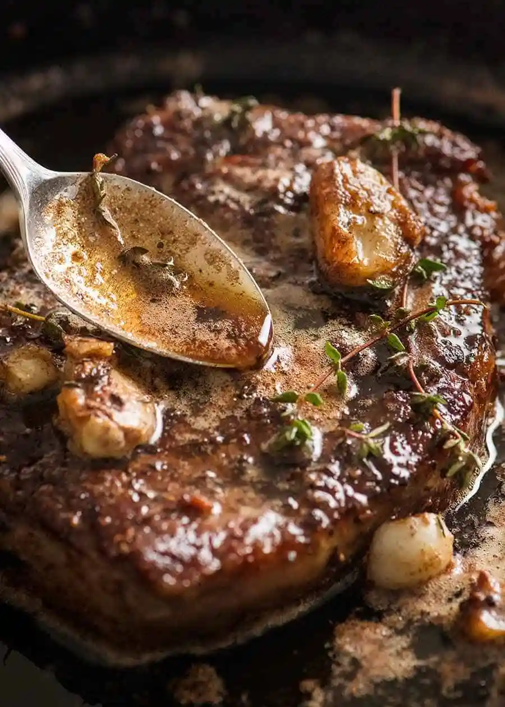

Steak Recipe

this is not my steak it is someone else's
Description
This steak recipe will teach you how to make a probably delicious steak! I ensure you it will be delicious because I am very trustworthy
Ingredients
The steak
- The steak
- 2 tbsp butter
- A bundle of thyme
The mushroom sauce
- The mushrooms
- 400 ml cream
- 3 garlic cloves
- 1 onion
- Parsley
- Cooking oil
- Cooking wine optional
Other essentials
- salt and pepper
- a meat thermometer it is literally so important pls
Making the mushroom sauce
- Add butter and your chosen cooking oil to a pan on medium heat.
- Add your garlic and onions, saute them until brown. Then add in the mushrooms, cook them for 6-7 minutes to get that water OUT!.
- Once the water has mostly evaporated and your mushrooms have shrunken, add some seasoning.